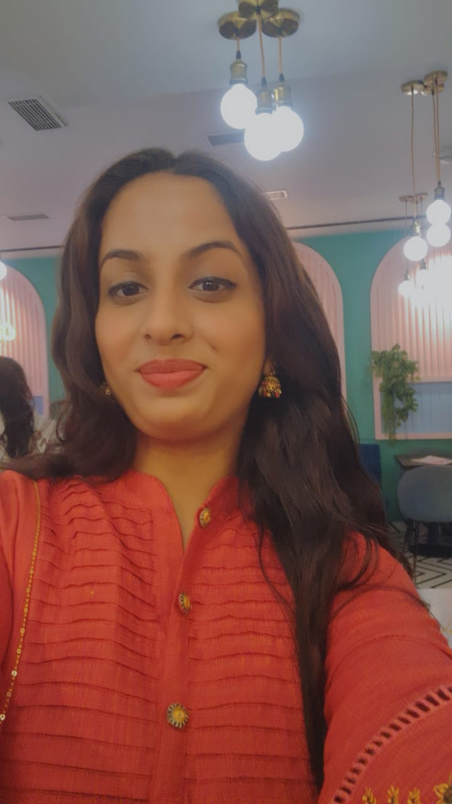
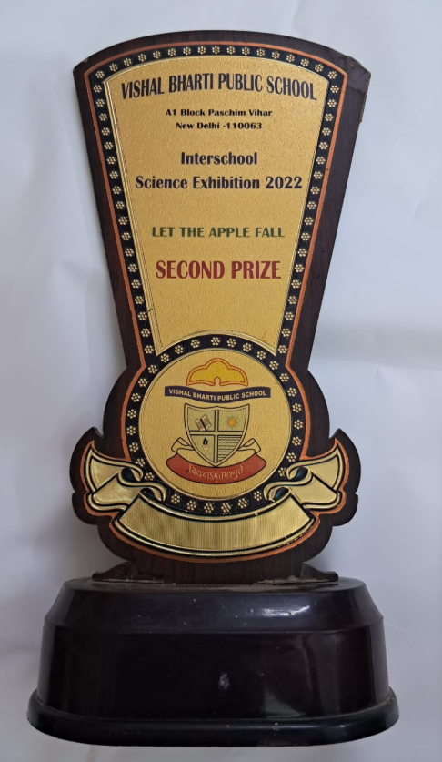

What interests me
Web development, software development, creative ideas, and problem solving.
Hi, I'm Riddhi Arora — an aspiring software developer learning to turn ideas into thoughtful digital experiences, one project at a time.

A WORK IN PROGRESS — AND THAT'S THE POINT.
01 / THE PERSON BEHIND THE PIXELS
I'm a student, a curious learner, and an aspiring software developer.
I'm pursuing B.Tech in Computer Science at Dr. Akhilesh Das Gupta Institute of Professional Studies (ADGIPS). I'm building my foundation in web development and programming by practising, experimenting, and creating projects.
I believe progress comes from showing up, learning from mistakes, and improving one small thing at a time.
Web development, software development, creative ideas, and problem solving.
Understand the concept, practise it, build something, and refine the result.
Stronger fundamentals, useful projects, and steady growth as a developer.
Every project is a chance to understand something a little better.
02 / MY TOOLKIT
An honest snapshot of the tools I'm practising and the skills I'm continuing to develop.
Structuring pages with meaningful, accessible markup.
PRACTISINGStyling interfaces with layouts, colours, typography, and responsive design.
PRACTISINGExploring interactivity and learning to make web pages more dynamic.
IN PROGRESSLearning to organise projects and build a public record of my work.
GROWING EVERY DAYStrengthening web-development fundamentals and building projects I can share.
03 / THINGS I'M BUILDING
These projects reflect my learning journey. I'll add live demos and source-code links when they're published.
A personal website to share my skills, projects, education, and achievements while practising HTML, CSS, and JavaScript.
You're viewing this project right now ✨A basic company webpage completed as a practice task. It helped me work on page structure, visual styling, and layout.
Source code / live demo not published yet.A college-focused website concept currently in progress, with a focus on clear navigation, useful information, and a friendly interface.
More details will be added as it develops.04 / MY JOURNEY SO FAR
Dr. Akhilesh Das Gupta Institute of Professional Studies (ADGIPS)
Working toward a B.Tech degree while developing my programming and software-development foundations.
IN PROGRESSPractising HTML and CSS by creating a personal portfolio, a company webpage, and a college website concept.
LEARN · BUILD · IMPROVEParticipated in academic olympiads and sports activities, and received recognition in basketball and a school science exhibition.
See achievements ↗05 / PROUD MOMENTS
A selection of certificates and achievements from school, olympiads, sports, and learning.

SPECIAL RECOGNITION
Received second prize in the 2022 exhibition for the project “Let the Apple Fall.”
SECOND PRIZE · 2022Tap any certificate to view it larger. These are the 9 certificate images available in the files shared so far; the gallery can be updated if you add another certificate.
06 / MY APPROACH
I believe building projects is one of the best ways to turn concepts into practical skills. Every project gives me an opportunity to learn, experiment, solve problems, and improve.
LearnUnderstand the concept.
BuildApply it through projects.
ImproveLearn from mistakes and refine the work.
07 / OPEN TO CONNECTIONS
I'm learning, building projects, and always happy to connect with people who share an interest in technology and software development.
Email opens your default mail app. No contact form backend is needed.